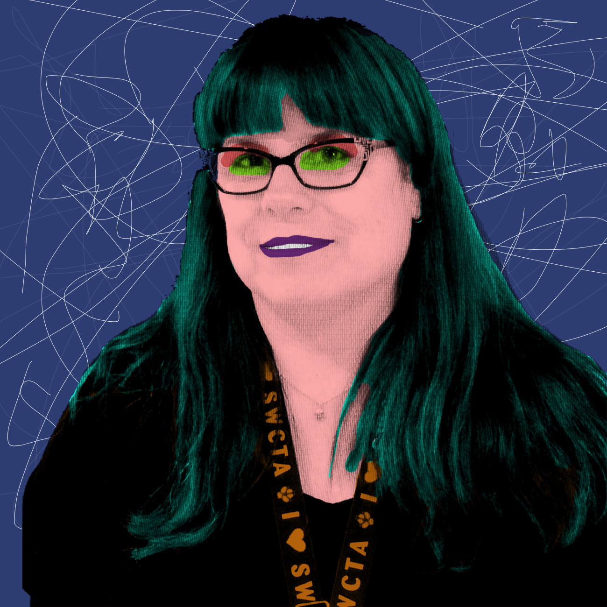
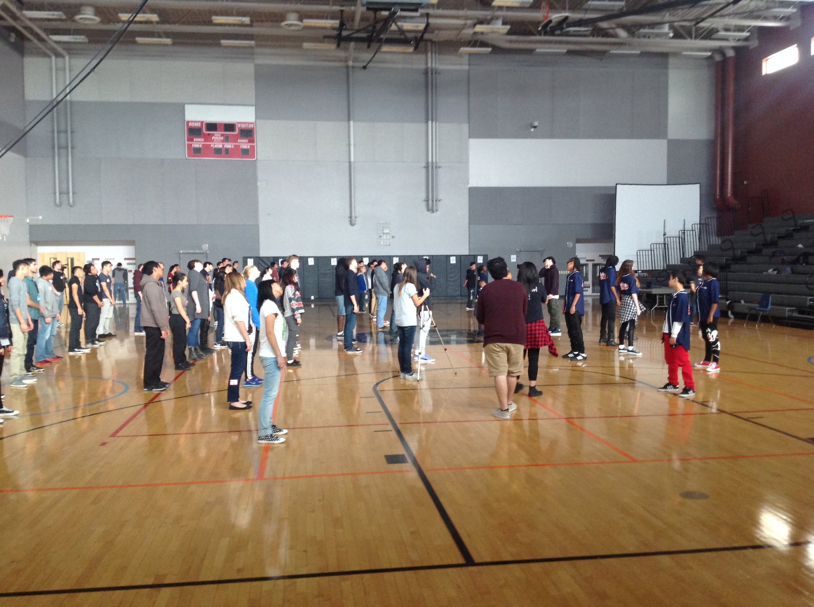
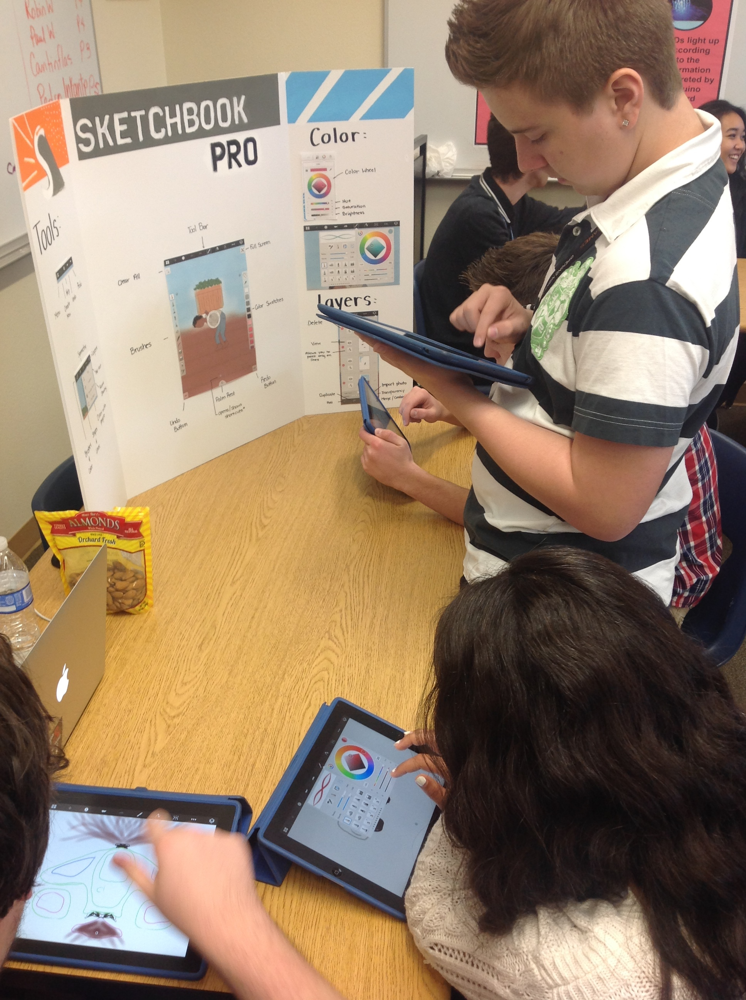

In graphic design two we learned how to do Andy Warhol style edits on photos. Our project was to take a photo of one of the teachers here at Southwest and use the Andy Warhol technique on their photo. Doing this editing was really fun and I enjoyed learning how to edit photos a lot. This is one of the better assignments we've done this year in my program area. I think it's a useful skill to have and now I can use this tutorial on any photo I take.

One part of this project was that we had a marketing division whose job was to raise money so that we could give the Culture Shock kids a present. Our group was able to make enough money through events like a walkathon to purchase a new speaker for the crew to use when they preform. The speaker was wrapped and signed by all the kids that participated in the projected and then presented to the leader of Culture Shock.

This photo is all of the Web Design kids strethcing before the Culture Shock kids taught them their routine. The Culture Shock kids spent about an hour going over a routine that the Web Design kids then did in front of the whole school flash mob style.

The Culture Shock kids and all the web students got to participate in an expo style workshop. There were multiple stations set up for all the kids to learn and explore tech. This PBL was the most fun and enriching experience i've had in my life. It was similar to being able to go and donate shoes and shirts to the elementary school kids last year, but getting to talk to the kids and spend two days with them made it all the more better. They taught me something how to dance something I never thought i'd be able to do and we were able to show them how fun tech can be and how they can create whatever they want using tech. I got to be apart of the social media team along with three others and getting the experience of going around taking pictures, talking to kids, and just telling the world what we do here at Southwest was great. This PBL has taught me so much and gave me the chance to help some kids who are less fortunate than me.